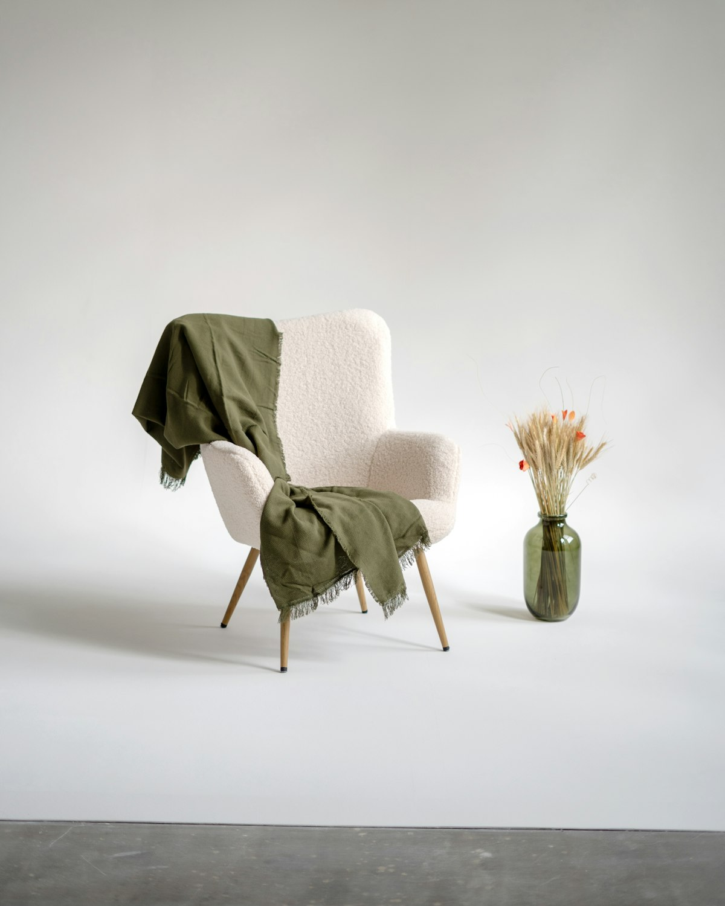

Understanding attachment in adult relationships
How early experiences of closeness can echo in the way we reach for, and protect ourselves from, the people we love.
Individual & couples psychotherapy · Sydney
Psychotherapy for individuals and couples who want to understand how they relate, to themselves and to the people who matter most, with a particular interest in attachment and Emotionally Focused Therapy.

Illustrative photograph. Not the practice’s rooms.
Welcome
This concept practice offers a calm, unhurried place to slow those moments down, to make sense of what you feel and need, and to explore new ways of responding. You might come on your own, or together with a partner.
About the practiceWays to work together
Not sure which fits? You can describe your situation in an enquiry and talk it through before deciding.
Space to understand your emotional world, your history and the patterns that shape how you connect with others.
For partners who feel stuck in the same arguments or a growing distance, and want to understand what is happening between them.
An attachment-based approach that looks at emotions, needs and the cycles partners can get caught in.
The therapist’s professional photograph will appear here once provided and approved.
Meet the therapist
Therapy here is described as a shared piece of work: attentive to feeling, curious about patterns, and respectful of the pace each person needs.
A short introduction in the therapist’s own words, including name, professional background and the people they most often work with.
Verified qualifications, registration and professional memberships will be listed on the About page after confirmation.
A relational philosophy
Our need for closeness and reassurance is a normal part of being human, not a weakness to overcome.
The ways we protect ourselves usually began for good reasons. Understanding them comes before changing them.
Feelings point to what matters to us. Slowing down to notice them can open new choices.
What to expect
Illustrative sequence — the practice’s actual process will be confirmed
Share a little about what you are hoping for, as much or as little as feels right.
A chance to ask questions and consider whether this way of working suits you. Format to be confirmed
Time to talk about what brings you, what you would like to be different and how you might work together.
Sessions continue at a rhythm you agree on, reviewed together along the way.
Resources
How early experiences of closeness can echo in the way we reach for, and protect ourselves from, the people we love.
When you are ready
There is no need to have the right words. A short message is enough to begin a conversation about whether this practice is a good fit for you.